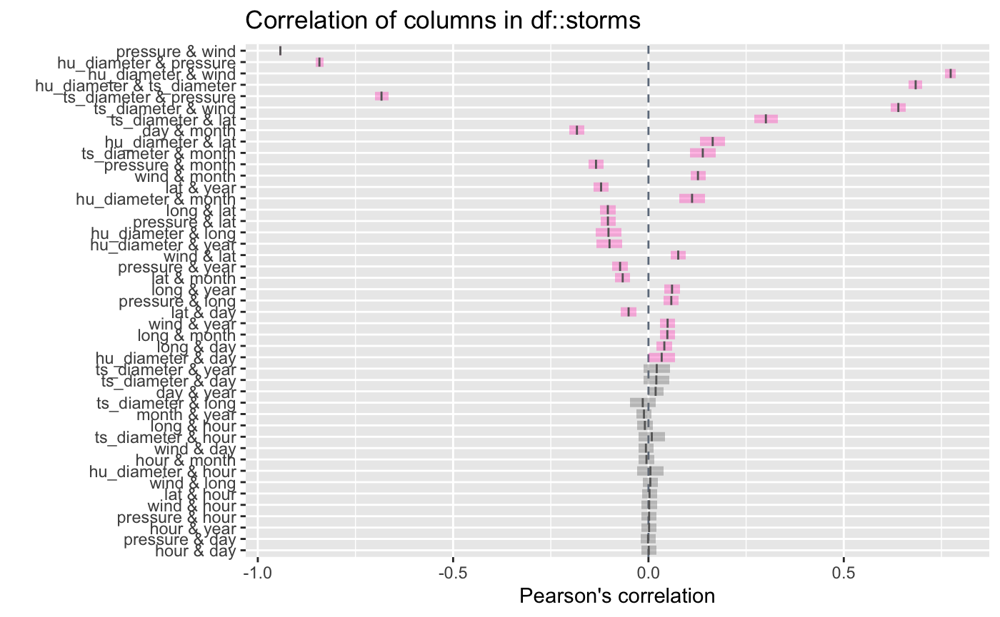
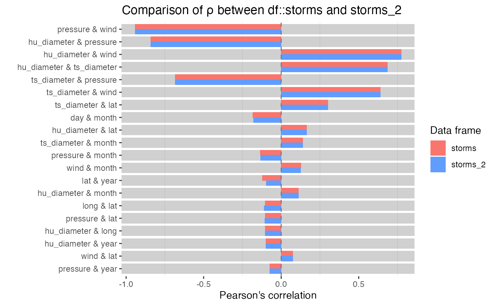

vignettes/pkgdown/inspect_cor_exampes.Rmd
inspect_cor_exampes.Rmdtdf
The examples below make use of the tdf and
storms data from the dplyr package
For illustrating comparisons of dataframes, use the
tdf data and produce two new dataframes
star_1 and star_2 that randomly sample the
rows of the original and drop a couple of columns.
inspect_cor() for a single dataframe
inspect_cor() returns a tibble containing Pearson’s
correlation coefficient, confidence intervals and \(p\)-values for pairs of numeric columns .
The function combines the functionality of cor() and
cor.test() in a more convenient wrapper.
library(inspectdf)
inspect_cor(storms)## # A tibble: 45 × 7
## col_1 col_2 corr p_value lower upper pcnt_…¹
## <chr> <chr> <dbl> <dbl> <dbl> <dbl> <dbl>
## 1 pressure wind -0.944 0 -0.946 -0.942 100
## 2 hurricane_force_diameter pressure -0.821 0 -0.830 -0.812 45.1
## 3 hurricane_force_diameter wind 0.754 0 0.742 0.765 45.1
## 4 hurricane_force_diameter tropical… 0.681 0 0.666 0.695 45.1
## 5 tropicalstorm_force_diameter pressure -0.678 0 -0.692 -0.663 45.1
## 6 tropicalstorm_force_diameter wind 0.625 0 0.608 0.641 45.1
## 7 tropicalstorm_force_diameter lat 0.318 1.66e-119 0.294 0.342 45.1
## 8 hurricane_force_diameter lat 0.190 8.83e- 44 0.164 0.215 45.1
## 9 day month -0.174 5.59e- 80 -0.191 -0.156 100
## 10 tropicalstorm_force_diameter month 0.171 8.89e- 36 0.145 0.197 45.1
## # … with 35 more rows, and abbreviated variable name ¹pcnt_nna
## # ℹ Use `print(n = ...)` to see more rowsA plot showing point estimate and confidence intervals is printed
when using the show_plot() function. Note that intervals
that straddle the null value of 0 are shown in gray:
inspect_cor(storms) %>% show_plot()
Notes:
inspect_cor drops missing values prior to calculation
of each correlation coefficient.p_value is associated with the null hypothesis
\(H_0: \rho = 0\).inspect_cor() for two dataframes
When a second dataframe is provided, inspect_cor()
returns a tibble that compares correlation coefficients of the first
dataframe to those in the second. The p_value column
contains a measure of evidence for whether the two correlation
coefficients are equal or not.
inspect_cor(storms, storms[-c(1:200), ])## # A tibble: 45 × 5
## col_1 col_2 corr_1 corr_2 p_value
## <chr> <chr> <dbl> <dbl> <dbl>
## 1 pressure wind -0.944 -0.944 0.914
## 2 hurricane_force_diameter pressure -0.821 -0.821 1
## 3 hurricane_force_diameter wind 0.754 0.754 1
## 4 hurricane_force_diameter tropicalstorm_force_diame… 0.681 0.681 1
## 5 tropicalstorm_force_diameter pressure -0.678 -0.678 1
## 6 tropicalstorm_force_diameter wind 0.625 0.625 1
## 7 tropicalstorm_force_diameter lat 0.318 0.318 1
## 8 hurricane_force_diameter lat 0.190 0.190 1
## 9 day month -0.174 -0.170 0.743
## 10 tropicalstorm_force_diameter month 0.171 0.171 1
## # … with 35 more rows
## # ℹ Use `print(n = ...)` to see more rowsTo plot the comparison of the top 20 correlation coefficients:

Notes:
p_value indicates stronger evidence against the
null hypothesis \(H_0: \rho_1 =
\rho_2\) and an indication that the true correlation coefficients
differ.NA,
the comparison is omitted from the visualisation.alpha
argument to inspect_cor(). The default is
alpha = 0.05.